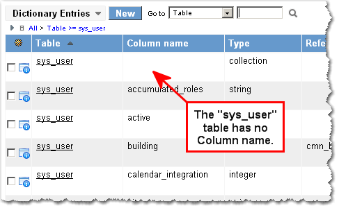
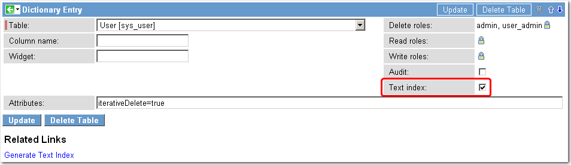

Enabling Text Search in Record Lists
Contents
1 Overview
Administrators can enable text searches for any table or field. For example, Incident lists provide an option to search for text, which searches all field on the records. This feature is enabled by default for several tables, including Incident, and Change.
| |
Note: The Search For text option only appears for tables that are text indexed. |
2 Enabling Text Searches on Tables
To add the Search for text option to a table:
- Navigate to System Definition > Dictionary
- Click the table name to open the dictionary entry.
- A table in the System Dictionary is a record that has a Table name but no Column name.
- 
- Select the Text index check box to enable text indexing for text fields on the table.
- Click Update.
- 
- The Search for text option now appears on the list view for the table.
- Click Generate Text Index.
- This process may take a while to complete, and you may notice performance degradation or incomplete search results while the index is being generated. To view indexing progress, see Viewing Text Indexing Statistics and Status.
{kind=link}
{kind=link}
3 Regenerating Text Indexes for Tables
To regenerate the text index for a table, open the system dictionary record for the table and click the Generate Text Index related link. In the dialog box, select whether to enable email notification when this table is indexed and click OK.
{kind=link}
4 Stop Words
Stop words are common words that are not indexed because they are not meaningful in search results. Articles, conjunctions, personal pronouns, and prepositions are examples of stop words that are not used in keyword searches.
Administrators can configure stop words for all indexed tables and for specific tables. See Administering ZIng Text Search.